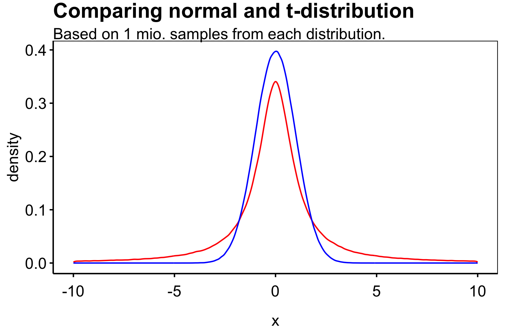
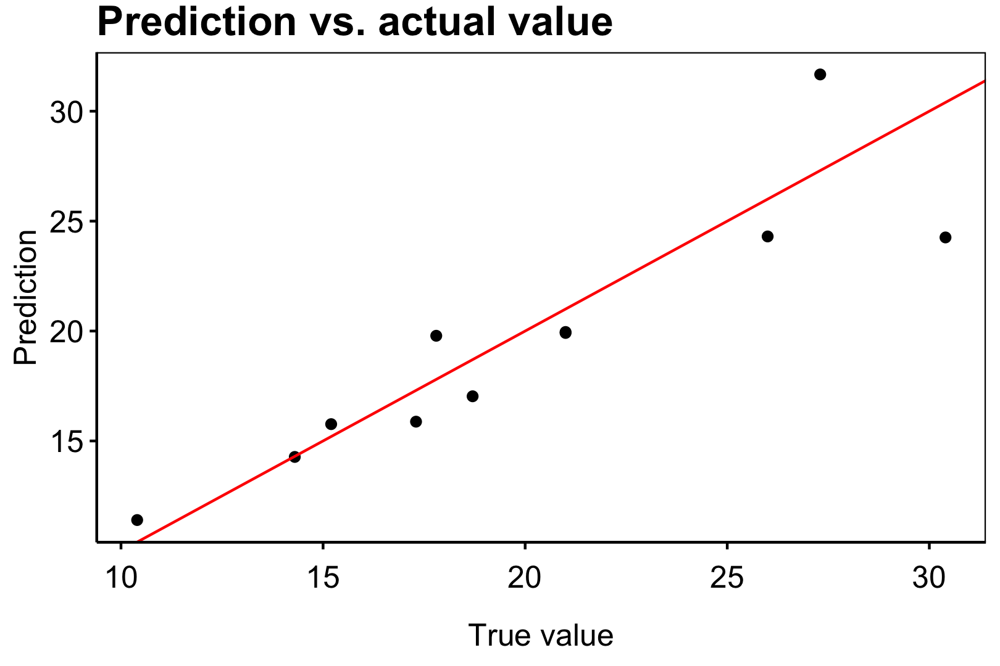

3.1 Week 1
Exercise 1. Let \(\tilde m = \arg\min_{m\in\mathcal G} r(m)\). Proof that
\[ r(\hat m_n)-r(\tilde m)\le 2\sup_{m\in\mathcal G}\left\vert\hat R_n(m)-r(m) \right\vert. \]
Solution.
We recall that per definition
\[ R(\hat m_n)=\mathbb E[L(Y,\hat m_n(X))\ \vert\ \mathcal D_n]\quad \text{and}\quad r(\hat m_n)=\mathbb E[R(\hat m_n)] \]
for some estimator \(\hat m_n\). Assume now that \(m(\mathcal D_n)=\hat m_n\in \mathcal G\) is the estimator given the data \(\mathcal D_n\) from the precedure \(m\). We led \(\tilde m\) be the Bayes estimator on \(\mathcal G\). We therefore have \[\begin{align*} r(\hat m_n)-r(\tilde m)&=r(\hat m_n)-r(\tilde m)+\hat R_n(\hat m_n)-\hat R_n(\hat m_n)+\hat R_n(\tilde m)-\hat R_n(\tilde m)\\ &=r(\hat m_n)-\hat R_n(\hat m_n)+\hat R_n(\tilde m)-r(\tilde m)+\underbrace{\hat R_n(\hat m_n)-\hat R_n(\tilde m)}_{\le 0}\\ &\le \Big(r(\hat m_n)-\hat R_n(\hat m_n)\Big)+\Big(\hat R_n(\tilde m)-r(\tilde m)\Big)\\ &\le \Big\vert \hat R_n(\hat m_n)-r(\hat m_n)\Big\vert+\Big\vert \hat R_n(\tilde m)-r(\tilde m)\Big\vert\\ &\le2\sup_{m\in \mathcal G} \Big\vert \hat R_n(m)-r(m)\Big\vert \end{align*}\] as desired. \(\square\)
We consider the Poisson deviance loss
\[ L_{\text{pois:dev}}(y_1,y_2)=2\left(y_1\log \frac{y_1}{y_2}-y_1+y_2\right). \]
- Show that \(\arg\min r(m)=m^*(x)=E[Y\ \vert\ X=x]\).
- In the squared loss case \(L_2(y_1,y_2)=(y_1-y_2)^2\), we used its Hilbert space property to derive that for any estimator \(\hat m_n(x)\) \[ r_2(\hat m_n(x))-r_2(m^*(x))=\mathbb E[L_2(\hat m_n(x),m^*(x))] \] Show that an anaolgue result for the he Poisson deviance loss is not true, i.e., \[\begin{align*} r_{\text{pois:dev}}(\hat m_n(x))-r_{\text{pois:dev}}(m^*(x))&=\mathbb E\left[2\left(Y\log \frac{m^*(x)}{\hat m_n(x)}-m^*(x)+\hat m_n(x)\right)\right]\\ &\ne \mathbb E[L_{\text{pois:dev}}(\hat m_n(x),m^*(x))] \end{align*}\]
Solution (1).
We have that \[\begin{align*} r(m)&=\mathbb E\left[2\left(Y\log \frac{Y}{m(X)}-Y+m(X)\right)\right]\\ &=\mathbb E\left[ \mathbb E\left.\left[2\left(Y\log \frac{Y}{m(x)}-Y+m(x)\right)\ \right\vert\ X=x\right]\right]\\ \end{align*}\] We see that the integrand is differentiable in \(m=m(x)\) and so we have \[\begin{align*} \frac{\partial}{\partial m}r(m)&=\frac{\partial}{\partial m}\mathbb E\left[ \mathbb E\left.\left[2\left(Y\log \frac{Y}{m}-Y+m\right)\ \right\vert\ X=x\right]\right]\\ &=\mathbb E\left[ \mathbb E\left.\left[\frac{\partial}{\partial m}2\left(Y\log \frac{Y}{m}-Y+m\right)\ \right\vert\ X=x\right]\right]\\ &=\mathbb E\left[ \mathbb E\left.\left[2\left(-Y \frac{m}{Y}\frac{Y}{m^2}+1\right)\ \right\vert\ X=x\right]\right]\\ &=\mathbb E\left[ \mathbb E\left.\left[2\left(-\frac{Y}{m}+1\right)\ \right\vert\ X=x\right]\right]\\ &=-2\mathbb E\left[ \mathbb E\left.\left[\frac{Y}{m}\ \right\vert\ X=x\right]\right]+2 \end{align*}\] Setting this equal to zero gives
\[ 1=\mathbb E\left[ \mathbb E\left.\left[\frac{Y}{m}\ \right\vert\ X=x\right]\right]=\frac{1}{m}\mathbb E\left[ \mathbb E\left.\left[Y\ \right\vert\ X=x\right]\right] \]
Giving that the expectation is minimized for
\[ m=E\left.\left[Y\ \right\vert\ X=x\right] \]
as desired. \(\square\)
Solution (2).
Take any estimator \(\hat m_n\) and consider the risk associated with the estimator: \[\begin{align*} r_{\text{pois:dev}}(\hat m_n(X))-r_{\text{pois:dev}}(m^*(x))&=\mathbb E\left[2\left(Y\log \frac{Y}{\hat m_n(X)}-Y+\hat m_n(X)\right)\right]-\mathbb E\left[2\left(Y\log \frac{Y}{ m^*(X)}-Y+m^*(X)\right)\right]\\ &=\mathbb E\left[2\left(Y\log \frac{Y}{\hat m_n(X)}-Y+\hat m_n(X)-Y\log \frac{Y}{ m^*(X)}+Y-m^*(X)\right)\right]\\ &=\mathbb E\left[2\left(Y\log \frac{Ym^*(X)}{\hat m_n(X)Y}+\hat m_n(X)-m^*(X)\right)\right]\\ &=\mathbb E\left[2\left(Y\log \frac{m^*(X)}{\hat m_n(X)}+\hat m_n(X)-m^*(X)\right)\right] \end{align*}\] Yielding the desired result. \(\square\)
Exercise 3. We consider a simple regression case with no explanatory variables. We denote by \(\hat m_{n,1}\) the sample mean and by \(\hat m_{n,2}\) the sample mean. Furthermore, \(\hat R_{n,1}\) and \(\hat R_{n,2}\) denote the empirical risk with respect to the \(L_1\) loss and the squared loss respectively.
- Generate 10,000 iid observations \(y_1,...,y_{10000}\) from a standard normal distribution. Compare \[ \hat R_{n,1}(\hat m_{n,1}),\hat R_{n,1}(\hat m_{n,2}),\hat R_{n,2}(\hat m_{n,1}),\hat R_{n,2}(\hat m_{n,2}). \]
- Generate 10,000 iid observations \(y_1,...,y_{10000}\) from a \(t\)-distribution with one degree of freedom. Compare \[ \hat R_{n,1}(\hat m_{n,1}),\hat R_{n,1}(\hat m_{n,2}),\hat R_{n,2}(\hat m_{n,1}),\hat R_{n,2}(\hat m_{n,2}). \]
- What conclusion can you draw from the two exercises?
Solution (1).
We set the seed to 1 set.seed(1) and generate the \(n=10000\) samples.
set.seed(1)
y <- rnorm(n =10000,
mean = 0,
sd = 1)We may now compute the sample mean and median.
hat_m_1 <- median(y)
hat_m_2 <- mean(y)One may recall that \(\text{median}(X)=\mathbb E[X]=0\) for \(X\sim \mathcal N(0,1)\) and so we would expect \(\hat m_{n,1}\approx \hat m_{n,2}\). We can compute the empirical risk wrt. the \(L_1\) and \(L_2\) loss.
hat_R_11 <- sum(abs(y-hat_m_1))/length(y)
hat_R_11## [1] 0.8060947hat_R_12 <- sum(abs(y-hat_m_2))/length(y)
hat_R_12## [1] 0.8061373hat_R_21 <- sum((y-hat_m_1)**2)/length(y)
hat_R_21## [1] 1.024851hat_R_22 <- sum((y-hat_m_2)**2)/length(y)
hat_R_22## [1] 1.024763Although these are empirical risk we have not computed an estimate of the risk as we should generate more samples of the risk. As such we draw using the above method \(S=1000\) samples of the risks and compute the means.
S <- 1000
n <- 10000
hat_R <- rowMeans(
#Generate S samples (in 4 x S-matrix)
sapply(1:S, function(s) {
#Generate y's
y <- rnorm(n,mean=0,sd=1)
#Compute estimates
hat_m_1 <- median(y)
hat_m_2 <- mean(y)
#Compute risks
c(
sum(abs(y-hat_m_1))/length(y),
sum(abs(y-hat_m_2))/length(y),
sum((y-hat_m_1)**2)/length(y),
sum((y-hat_m_2)**2)/length(y)
)
})
#The output i then taken rowMeans on
)We may compare the results in the table below.
| Measure | Value |
|---|---|
| \(\hat R_{n,1}(\hat m_{n,1})\) | 0.7979859 |
| \(\hat R_{n,1}(\hat m_{n,2})\) | 0.7980077 |
| \(\hat R_{n,2}(\hat m_{n,1})\) | 1.0004189 |
| \(\hat R_{n,2}(\hat m_{n,2})\) | 1.0003643 |
We can see that the following holds:
- For the \(L_1\) loss the empirical median does better than the empirical mean,
- For the squared loss the empirical median does worse than the empirical mean.
Solution (2).
We set the seed to 1 set.seed(1) and generate the \(n=10000\) samples.
set.seed(1)
y <- stats::rt(n =10000,
df = 1)We may now compute the sample mean and median.
hat_m_1 <- median(y)
hat_m_2 <- mean(y)One may recall that \(\text{median}(X)=\mathbb E[X]=0\) for \(X\sim \mathcal t(1)\) and so we would expect \(\hat m_{n,1}\approx \hat m_{n,2}\). We can compute the empiracal risk wrt. the \(L_1\) and \(L_2\) loss.
S <- 1000
n <- 10000
hat_R <- rowMeans(
#Generate S samples (in 4 x S-matrix)
sapply(1:S, function(s) {
#Generate y's
y <- rt(n,df=1)
#Compute estimates
hat_m_1 <- median(y)
hat_m_2 <- mean(y)
#Compute risks
c(
sum(abs(y-hat_m_1))/length(y),
sum(abs(y-hat_m_2))/length(y),
sum((y-hat_m_1)**2)/length(y),
sum((y-hat_m_2)**2)/length(y)
)
})
#The output i then taken rowMeans on
)We may compare the results in the table below.
| Measure | Value |
|---|---|
| \(\hat R_{n,1}(\hat m_{n,1})\) | 11.7586085 |
| \(\hat R_{n,1}(\hat m_{n,2})\) | 16.7838177 |
| \(\hat R_{n,2}(\hat m_{n,1})\) | 1.8456626^{7} |
| \(\hat R_{n,2}(\hat m_{n,2})\) | 1.84548^{7} |
We see that for the \(t\)-distribution with one degree of freedom we see the same relation as in the normal case. The median does better in the \(L_1\) loss but worse under the squared loss.
Solution (3).
We can see that the risk is far greater than the normal case. Comparing the density functions of a standard normal distribution and the \(t\)-distribution with one degree of freedom we see that the mean is the same but the variance is far greater than the normal case. In fact, with degrees of freedom below 2 we have that the variance is infinite.

This gives that for a given sample size the risk will tend to infinity as \(n\) grows to infinity. This in turn explains the large values we see in the risk. We see that for the \(t\)-distribution with one degree of freedom we see the same relation as in the normal case. The median does better in the \(L_1\) loss but worse under the squared loss.
Exercise 4. We want to practise model tuning with the mlr3 package. Go through the following steps:
- Install and load the relevant ml3 packages: mlr3, mlr3learners, mlr3tuning, mlr3mbo.
- Create a task
- Load the
mtcarsdata (write: data(mtcars)) - Use the
as_task_regrto create a task withmpgas target
- Set
regr.xgboostas learner with corresponding search space; e.g., \[\begin{align*} eta &= to\_tune(0, 1)\\ nrounds &= to\_tune(10, 5000)\\ max\_depth &= to\_tune(1, 20)\\ colsample\_bytree &= to\_tune(0.1, 1)\\ subsample &= to\_tune(0.1, 1) \end{align*}\] - Tune your learner on you task using the
tunefunction with
- Resampling method: 5-fold cross validation
- Measure: squared loss
- Method:
mboorrandom search - Terminator: 10 evaluations
- Fit your learner on the task using the optimal hyper parameters calculated
Solution (1).
We install the required packages.
packages <- c("mlr3",
"mlr3learners",
"mlr3tuning",
"mlr3mbo")
install.packages(packages, dependencies = TRUE)Solution (2).
We start by loading the data.
data("mtcars")
head(mtcars)## mpg cyl disp hp drat wt qsec vs am gear carb
## Mazda RX4 21.0 6 160 110 3.90 2.620 16.46 0 1 4 4
## Mazda RX4 Wag 21.0 6 160 110 3.90 2.875 17.02 0 1 4 4
## Datsun 710 22.8 4 108 93 3.85 2.320 18.61 1 1 4 1
## Hornet 4 Drive 21.4 6 258 110 3.08 3.215 19.44 1 0 3 1
## Hornet Sportabout 18.7 8 360 175 3.15 3.440 17.02 0 0 3 2
## Valiant 18.1 6 225 105 2.76 3.460 20.22 1 0 3 1We now transform the data into a task.
#Load the relevant libraries
library(mlr3)
library(mlr3learners )
library(mlr3tuning)
library(mlr3mbo)
#Start task
task_mtcars = as_task_regr(
mtcars,
target = "mpg",
id = "cars"
)We may now split out data set into random partions of a training dataset and a testing dataset.
#Split data
splits = partition(task_mtcars)
splits## $train
## [1] 3 4 8 9 10 21 25 30 32 6 12 16 17 22 23 24 29 31 18 19 20
##
## $test
## [1] 1 2 5 27 7 11 13 14 15 26 28We see that the testing dataset has \(N_1=11\) and the training dataset has \(N_2=21\). We will be training the model on the training dataset. Therefore we start a task on the subset.
task_mtcars_train = as_task_regr(
mtcars[splits$train,],
target = "mpg",
id = "cars_train"
)Solution (3).
We now initiate a learner.
# load regression xgboost
learner_xgboost = lrn("regr.xgboost")We can now look at the current configuration of the leaner by looking at the parameter space of the hyperparameter.
as.data.table(learner_xgboost$param_set)[,c("id","class","lower",
"upper","nlevels")]## id class lower upper nlevels
## 1: alpha ParamDbl 0 Inf Inf
## 2: approxcontrib ParamLgl NA NA 2
## 3: base_score ParamDbl -Inf Inf Inf
## 4: booster ParamFct NA NA 3
## 5: callbacks ParamUty NA NA Inf
## 6: colsample_bylevel ParamDbl 0 1 Inf
## 7: colsample_bynode ParamDbl 0 1 Inf
## 8: colsample_bytree ParamDbl 0 1 Inf
## 9: disable_default_eval_metric ParamLgl NA NA 2
## 10: early_stopping_rounds ParamInt 1 Inf Inf
## 11: early_stopping_set ParamFct NA NA 3
## 12: eta ParamDbl 0 1 Inf
## 13: eval_metric ParamUty NA NA Inf
## 14: feature_selector ParamFct NA NA 5
## 15: feval ParamUty NA NA Inf
## 16: gamma ParamDbl 0 Inf Inf
## 17: grow_policy ParamFct NA NA 2
## 18: interaction_constraints ParamUty NA NA Inf
## 19: iterationrange ParamUty NA NA Inf
## 20: lambda ParamDbl 0 Inf Inf
## 21: lambda_bias ParamDbl 0 Inf Inf
## 22: max_bin ParamInt 2 Inf Inf
## 23: max_delta_step ParamDbl 0 Inf Inf
## 24: max_depth ParamInt 0 Inf Inf
## 25: max_leaves ParamInt 0 Inf Inf
## 26: maximize ParamLgl NA NA 2
## 27: min_child_weight ParamDbl 0 Inf Inf
## 28: missing ParamDbl -Inf Inf Inf
## 29: monotone_constraints ParamUty NA NA Inf
## 30: normalize_type ParamFct NA NA 2
## 31: nrounds ParamInt 1 Inf Inf
## 32: nthread ParamInt 1 Inf Inf
## 33: ntreelimit ParamInt 1 Inf Inf
## 34: num_parallel_tree ParamInt 1 Inf Inf
## 35: objective ParamUty NA NA Inf
## 36: one_drop ParamLgl NA NA 2
## 37: outputmargin ParamLgl NA NA 2
## 38: predcontrib ParamLgl NA NA 2
## 39: predictor ParamFct NA NA 2
## 40: predinteraction ParamLgl NA NA 2
## 41: predleaf ParamLgl NA NA 2
## 42: print_every_n ParamInt 1 Inf Inf
## 43: process_type ParamFct NA NA 2
## 44: rate_drop ParamDbl 0 1 Inf
## 45: refresh_leaf ParamLgl NA NA 2
## 46: reshape ParamLgl NA NA 2
## 47: sampling_method ParamFct NA NA 2
## 48: sample_type ParamFct NA NA 2
## 49: save_name ParamUty NA NA Inf
## 50: save_period ParamInt 0 Inf Inf
## 51: scale_pos_weight ParamDbl -Inf Inf Inf
## 52: seed_per_iteration ParamLgl NA NA 2
## 53: skip_drop ParamDbl 0 1 Inf
## 54: strict_shape ParamLgl NA NA 2
## 55: subsample ParamDbl 0 1 Inf
## 56: top_k ParamInt 0 Inf Inf
## 57: training ParamLgl NA NA 2
## 58: tree_method ParamFct NA NA 5
## 59: tweedie_variance_power ParamDbl 1 2 Inf
## 60: updater ParamUty NA NA Inf
## 61: verbose ParamInt 0 2 3
## 62: watchlist ParamUty NA NA Inf
## 63: xgb_model ParamUty NA NA Inf
## id class lower upper nlevelsAs the text says we set som of the parameters to as specific section of the parameter space.
my_xg_learner = lrn("regr.xgboost",
eta = to_tune(0, 1),
nrounds = to_tune(10, 5000),
max_depth = to_tune(1, 20),
colsample_bytree = to_tune(0.1, 1),
subsample = to_tune(0.1, 1))Solution (4).
We tune a regression model using mbo search.
instance = tune(
method = tnr("mbo"), ### tuning method
task = task_mtcars_train,
learner = my_xg_learner,
resampling = rsmp("cv", folds = 5), #### resampling method: 5-fold cross validation
measures = msr("regr.rmse"), #### root mean squared error
terminator = trm("evals", n_evals =10) #### terminator
)We can consider the the estimates from each subset and the fitted parameters.
#All 20 runs
as.data.table(instance$archive)[, c("eta", "nrounds",
"max_depth", "regr.rmse")]## eta nrounds max_depth regr.rmse
## 1: 0.917875208 3533 11 3.802051
## 2: 0.765106068 412 8 2.964021
## 3: 0.674223188 4335 7 3.464838
## 4: 0.101590241 2508 18 2.433159
## 5: 0.818736983 1039 19 2.859263
## 6: 0.014765501 2093 3 2.229626
## 7: 0.872891106 3868 4 2.897375
## 8: 0.610313191 2177 11 3.501744
## 9: 0.028048314 4693 2 2.165364
## 10: 0.373920733 548 18 2.626296
## 11: 0.160639059 4116 2 2.187469
## 12: 0.796255760 4447 6 3.551414
## 13: 0.285658641 3817 5 2.380419
## 14: 0.002011162 4297 20 2.381016
## 15: 0.675239580 3975 1 3.539176
## 16: 0.616630552 4012 3 2.610140
## 17: 0.151641272 1924 5 2.284830
## 18: 0.368378715 382 17 3.098928
## 19: 0.475511641 2419 19 2.568179
## 20: 0.004646809 1678 10 3.029619#Optimal fitting
instance$result## nrounds eta max_depth colsample_bytree subsample learner_param_vals
## 1: 4693 0.02804831 2 0.4502029 0.7789301 <list[8]>
## x_domain regr.rmse
## 1: <list[5]> 2.165364#Optimal parameters
instance$result_learner_param_vals## $nthread
## [1] 1
##
## $verbose
## [1] 0
##
## $early_stopping_set
## [1] "none"
##
## $nrounds
## [1] 4693
##
## $eta
## [1] 0.02804831
##
## $max_depth
## [1] 2
##
## $colsample_bytree
## [1] 0.4502029
##
## $subsample
## [1] 0.7789301Solution (5).
We can now use optimal paramteres in instance$result_learner_param_vals to create a learner that we may fit to the training data.
#Define new tuner
xgb_tuned = lrn("regr.xgboost", id = "xgb tuned")
#Set parameters to the optimals from before
xgb_tuned$param_set$values = instance$result_learner_param_valsWe now fit the data.
xgb_tuned$train(task_mtcars_train)We can now predict onto the testing data.
predictions = xgb_tuned$predict_newdata(mtcars[splits$test,])
predictions## <PredictionRegr> for 11 observations:
## row_ids truth response
## 1 21.0 20.02108
## 2 21.0 20.04601
## 3 18.7 16.99866
## ---
## 9 10.4 11.58364
## 10 27.3 31.80603
## 11 30.4 24.47183#empirical risk
risk <- mean((predictions$truth-predictions$response)**2)Using a diagram we can see. That the model does pretty well. In fact the empirical risk is 6.38.
